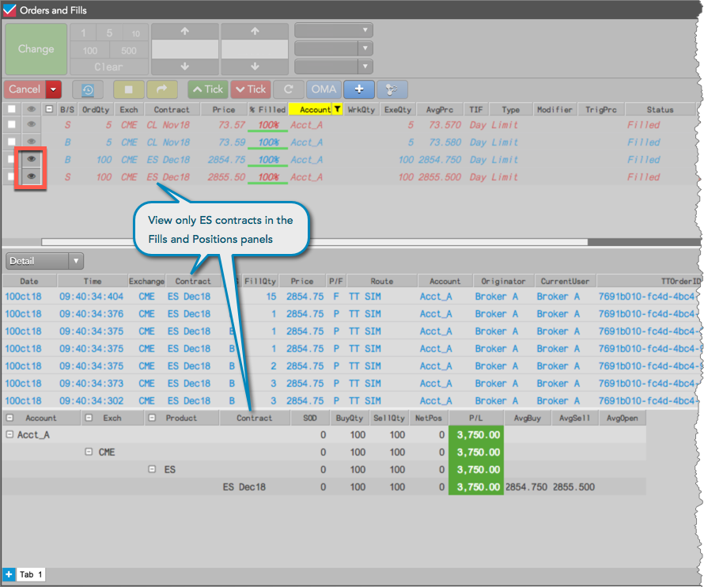
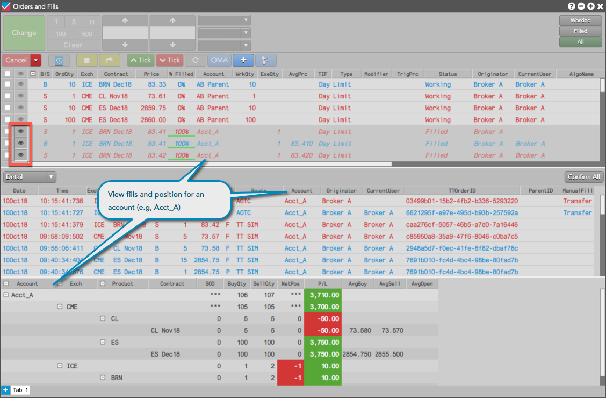
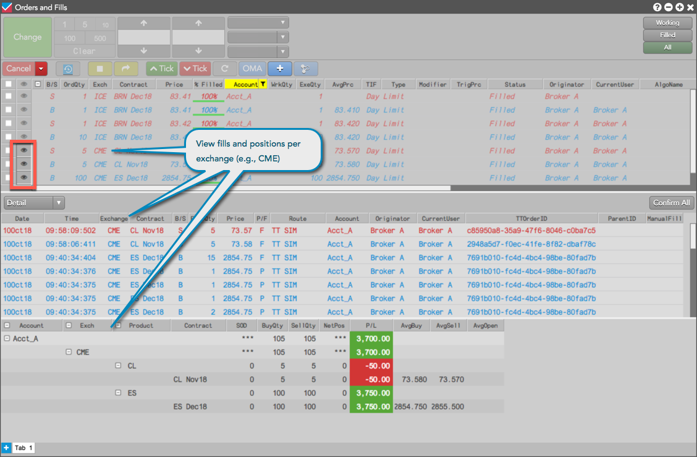

) in the "Watch" column. Each button is selected by default and all fills and positions are displayed.
) in the "Watch" column. Each button is selected by default and all fills and positions are displayed.To view positions from a specific set of fills, select the desired working and filled orders in the Order Book pane using the "eyeball" button () in the "Watch" column. Each button is selected by default and all fills and positions are displayed.
Note: The eyeball button is used for viewing filled and partially filled orders in the bottom panes. In the Order Book pane, the checkbox is used for "selecting" an order to modify or cancel.
To filter an order from the Fills and Positions panes, click in each order row. In the Order Book pane, you can toggle the order row buttons to:
View working and filled orders for contracts related to a specific product. In this example, the Fills pane displays fills only for ES instruments, and the Positions pane only shows positions based on those fills.

View working and filled orders for a specific account. In this example, the Fills pane displays fills only for Acct_A, and the Positions pane only shows positions based on those fills.

View working and filled orders for a particular exchange. In this example, the Fills pane displays fills only for CME, and the Positions pane only shows positions based on those fills.

By default the Orders pane shows activity only for the current trading session. Selecting the all eyeball button, displays the results for all of the rows in the Fills and Positions panes. However, if the Include orders from previous sessions setting is enabled in the Orders pane settings, selecting the all eyeball button still shows results only for the rows in the current session. If you want to see Fill and Position results for one or more rows from previous trading sessions, you must select the eyeball button for each individual row.